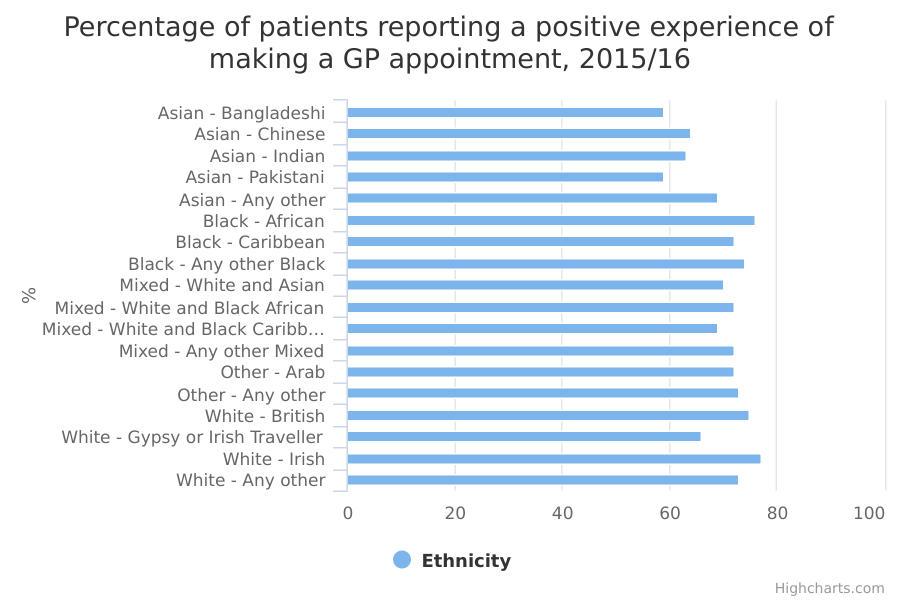

Satisfaction with access to GP services
The main facts and figures show that:
-
just under three-quarters of patients (73%) had a positive experience when making a GP appointment in 2015/2016
-
Irish patients were the most likely to have had a positive experience of making a GP appointment, and Pakistani patients the least likely to (77% of Irish patients did so in 2015/16, compared with 59% of Pakistani patients)
-
in each year from 2011/12 to 2015/16, patients from an Irish, African, White British and any other Black background were more likely than those from other groups to report a positive experience Asian patients (Pakistani, Bangladeshi, Indian and Chinese) were the least likely to report a positive experience each year from 2011/12 to 2015/16
-
patients in the Gypsy or Irish Traveller group also had rates of satisfaction below the national average from 2011/12 to 2015/16, although the findings are less reliable for this group because of the small numbers of respondents
Things you need to know
When observing trends in these statistics, you should not infer the existence or absence of trends outside the time period covered by this measure.
Although the number of respondents taking part each year is relatively large (about 0.9 million), caution should still be used when comparing satisfaction levels between ethnic groups or over time. This is because the sample sizes for some ethnic groups may be small.
All survey estimates are subject to a degree of uncertainty as they are based on a sample of the population. The degree of uncertainty is greater when the number of respondents is small, so uncertainty will be highest for minority ethnic groups.
This is particularly the case for people from a Gypsy or Irish Traveller background, who were 66% likely to report a positive experience of making an appointment in 2015/16 - among the least likely to do so. This figure is based on a small number of responses (218 in 2015/16) and, though the figure has been variable year on year, it was below the national average each year.
Where ethnic groups have consistently low or high scores over several survey years, this can somewhat offset the uncertainty around survey estimates from a single year.
What the data measures
This data measures the percentage of patients who had a positive experience when making an appointment to see a general practitioner (GP) in England.
The data is based on the GP patient survey (GPPS), which was commissioned by the National Health Service (NHS) and conducted by Ipsos MORI.
Patients were asked to rate their overall experience of making a GP appointment. Those who answered ‘fairly good’ or ‘very good’ were considered to have had a positive experience.
Patients are eligible for this survey if they:
- are 18 years of age or over
- have an NHS number
- have been registered with a GP for 6 months
- have not received a survey in the last 12 months
These statistics only include patients who live in England.
Why these ethnic categories were chosen
This data uses the standardised ethnic groups, based on the 2011 census:
White:
- White British
- Irish
- Gypsy, Traveller or Irish Traveller
- Any other White background
Mixed/Multiple ethnic groups:
- White and Black Caribbean
- White and Black African
- White and Asian
- Any other Mixed/ Multiple ethnic background
Asian/Asian British:
- Indian
- Pakistani
- Bangladeshi
- Chinese
- Any other Asian background
Black/African/Caribbean/Black British:
- African
- Caribbean
- Any other Black/African/Caribbean background
Other ethnic group:
- Arab
- Any other ethnic group
Access to GP services by ethnicity

| 2011/12 | 2012/13 | 2013/14 | 2014/15 | 2015/16 | |
| All | 79 | 76 | 75 | 73 | 73 |
|---|---|---|---|---|---|
| Asian - Any other | 74 | 71 | 69 | 67 | 69 |
| Asian - Bangladeshi | 66 | 63 | 61 | 61 | 59 |
| Asian - Chinese | 68 | 68 | 66 | 64 | 64 |
| Asian - Indian | 68 | 64 | 64 | 61 | 63 |
| Asian - Pakistani | 64 | 61 | 60 | 57 | 59 |
| Black - African | 82 | 78 | 78 | 75 | 76 |
| Black - Any other Black | 80 | 78 | 77 | 76 | 74 |
| Black - Caribbean | 78 | 75 | 73 | 72 | 72 |
| Mixed - Any other Mixed | 74 | 70 | 70 | 68 | 72 |
| Mixed - White and Asian | 74 | 70 | 69 | 68 | 70 |
| Mixed - White and Black African | 77 | 75 | 73 | 72 | 72 |
| Mixed - White and Black Caribbean | 74 | 72 | 69 | 68 | 69 |
| Other - Any other | 77 | 77 | 75 | 73 | 73 |
| Other - Arab | 75 | 75 | 70 | 69 | 72 |
| Unknown | 76 | 72 | 71 | 69 | 70 |
| White - Any other | 77 | 75 | 74 | 72 | 73 |
| White - British | 80 | 77 | 76 | 74 | 75 |
| White - Gypsy or Irish Traveller | 73 | 68 | 62 | 63 | 66 |
| White - Irish | 83 | 79 | 79 | 77 | 77 |
Summary
This data shows that:
-
79% of patients had a positive experience of making a GP appointment in 2011/12, but that fell to 73% of patients in 2015/16 the percentage reporting a positive experience fell for all ethnic groups over this time period
-
while Irish patients remained the most satisfied group from 2011/12 to 2015/16, the percentage reporting a positive experience fell from 83% to 77%, and for Pakistani patients - the least satisfied group over the 5 years - it fell from 64% to 59%
Download image and data
Methodology and type of data
Type of data
Survey
Purpose of data source
As a way of acknowledging the importance of providing a positive experience of care for patients, service users and carers, it is now standard practice in healthcare systems worldwide to ask people to provide direct feedback on the quality of their experience, treatment and care. This is used alongside additional information sources to provide local clinicians and managers with intelligence on the quality of local services from the patients’ and service users’ point of view to ultimately play a role in driving improvements in the quality of service design and delivery.
The GP Patient Survey has been designed to give patients the opportunity to feed back about their experiences of their GP surgery across a variety of issues. Replies to the survey are intended to help GP surgeries understand where they can improve.
Methodology
The GP patient survey is the major survey of patient experience of GP services in England.
In years up to 2015/16, and over a whole year cycle, approximately 2.6 million surveys are sent out and approximately 0.9 million responses are received. The average response rate is 35%.
Respondents can respond either by post, online or by phone. They may request a questionnaire in a different language, in braille or online using sign language.
All surveys carry the risk of biased results if some types of people are less likely to respond than others. To compensate for this, data from the GP Patient Survey is weighted to account for this non-response bias. This adjusts the data to account for potential differences between the demographic profile of all eligible patients in a practice and the patients who actually complete the questionnaire. The non-response weighting scheme has been developed by Ipsos MORI, incorporating elements such as age and gender as well as factors from the area where the respondent lives such as level of deprivation, ethnicity profile, ACORN classification and so on, which have been shown to impact on non-response bias within the GP Patient Survey.
Further information is available on the GP Survey
Rounding
Values are presented to one decimal place.